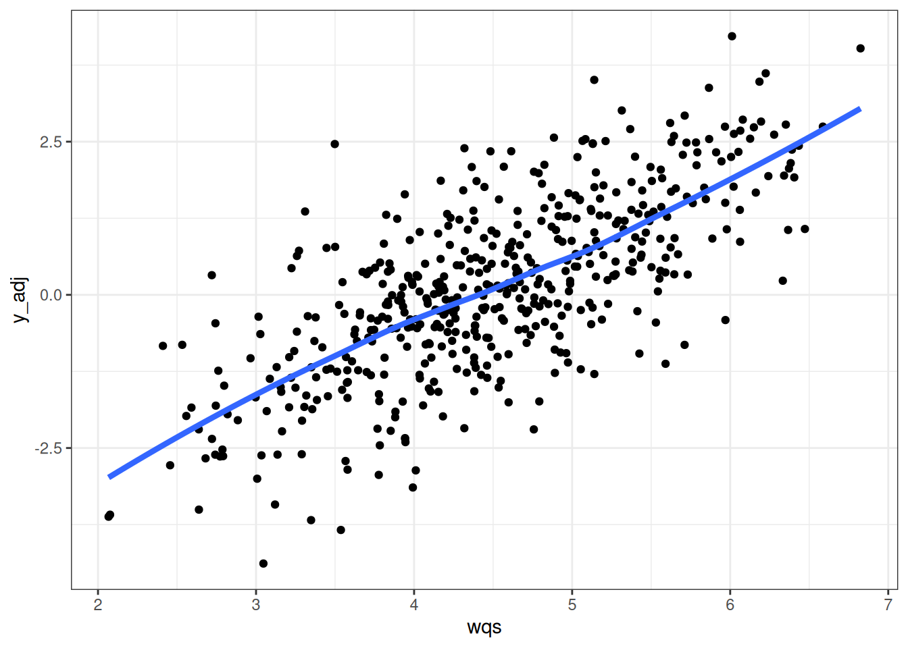
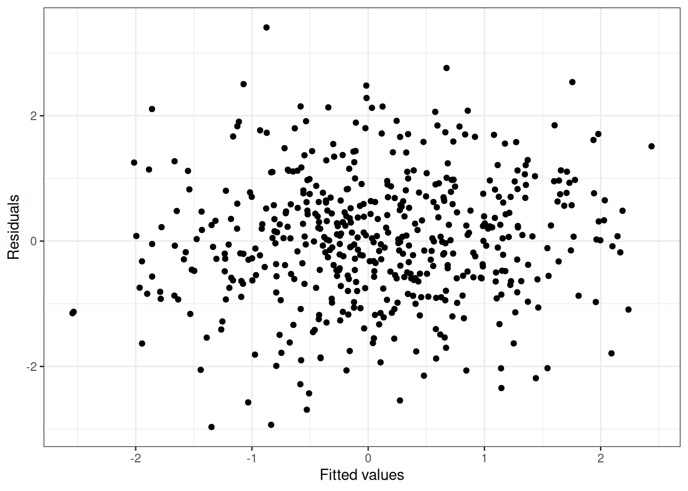
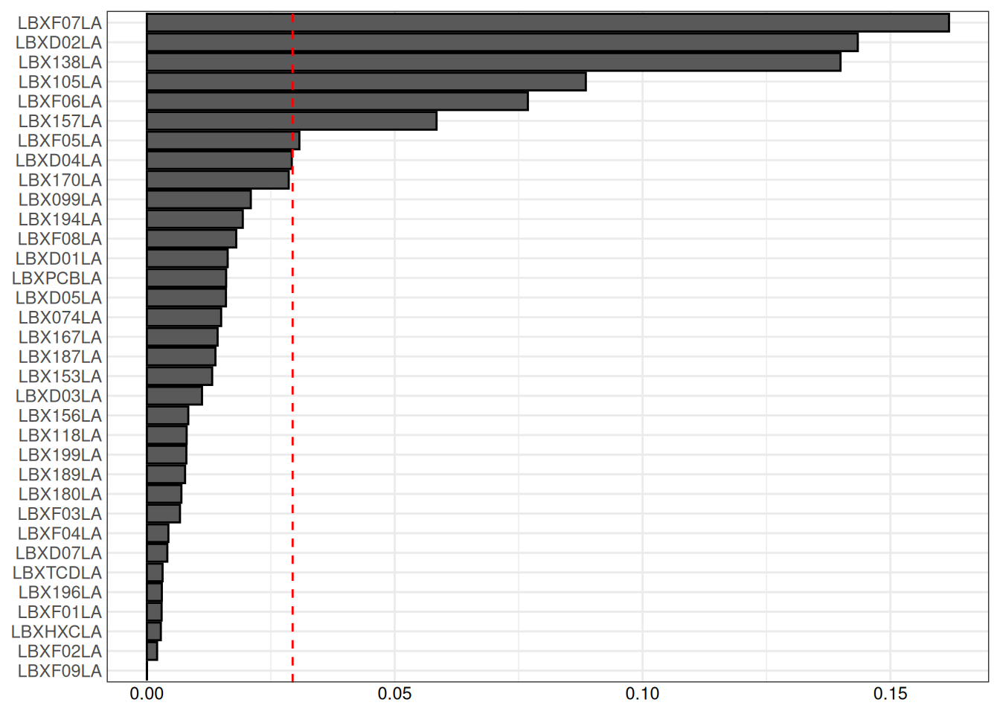
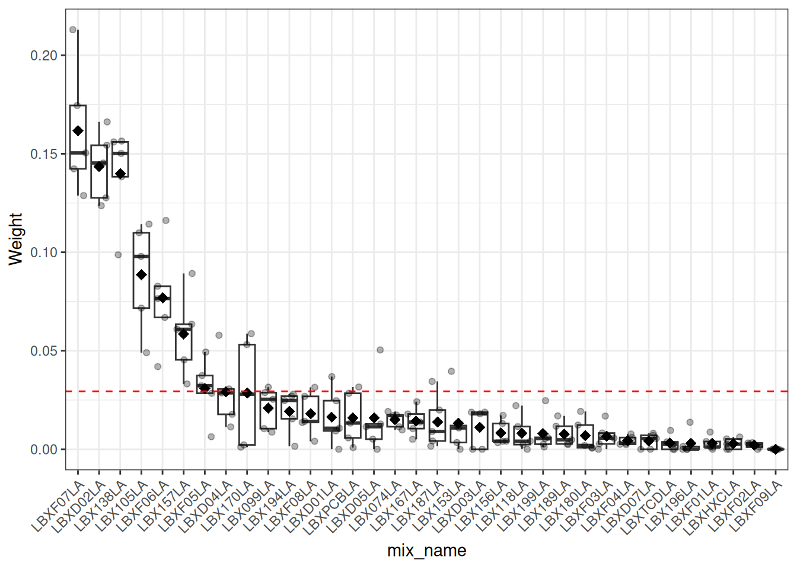
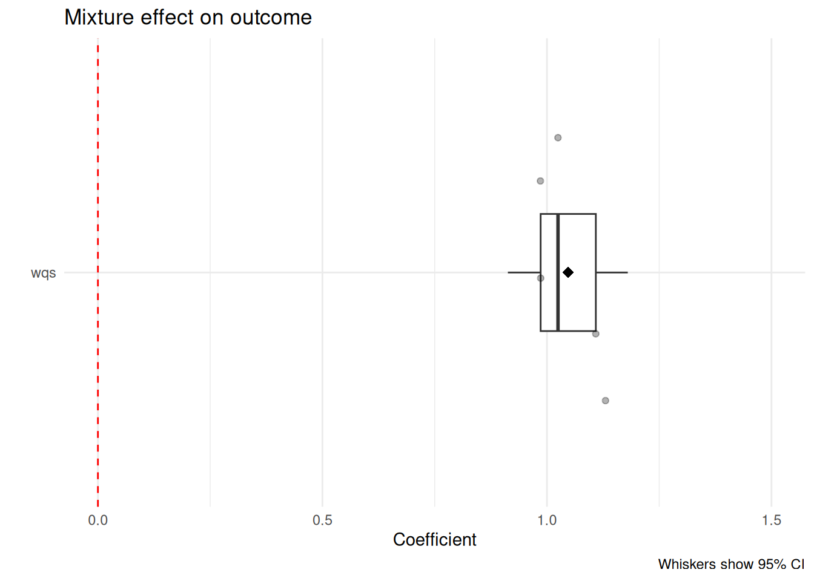
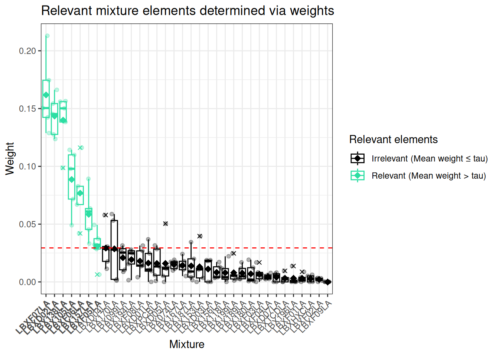

Is there an overall mixture effect on my (health) outcome? Which components in the mixture are driving the outcome? We’re trying to estimate an overall mixture effect of multiple elements on an outcome, whilst also benefiting from seeing which elements impact the outcome the most.
Commonly used in environmental (chemical) mixture risk evaluation, since more common shrinkage methods used for prediction like (adaptive) lasso, elastic net and ridge regression handle correlated elements without necessarily taking into account association with the outcome but e.g. due to exposure and/or behavior patterns.
When can I use it?
Assumption #1: the relationship between the overall mixture effect (wqs) and outcome is linear
Assumption #2: there are no interactions between the mixture elements in their effect on the outcome (it’s just additive)
You check #1 by model diagnostics after fitting (covered in Linear Regression) For #2, a literature approach can be taken, or running GLMs with interaction terms, or even running BKMR TBA for interaction testing
How do I use it?
need to enforce at the beginning that all variables are either all positive or all negative relative to the outcome (e.g. you believe MEP is harmful for cognition, but that the rest of the mixture is protective of cognition, where more “cognition” means better cognition, so you would want to invert(- them) MEP values, since you believe smaller values of MEP are good for cognition i.e in the same direction as “cognition”)
need to enforce at the beginning if one variable is binary in the mixture, then all of them need to be binary
in practice, have less than a smaller doubledigit number of mixture elements
do you have an overall mixture effect? Look at the Beta coeff sample mean and test against =0. Beta can be <0, meaning the effect decreases the outcome
the elements whose weights are larger than 1/(#mixture elements) indicate a larger contribution to the outcome than expected by chance
Code usage examples
Since you need to code all your variables to be the same direction with the outcome (whatever the direction is), you probably have some idea as to what that direction is. If you don’t though, you can start by exploring both indices, one in the positive direction (pwqs) and one in the negative (nwqs). This way, you can see which remains significant (look at whether the CIs aren’t capturing 0)
library(gWQS)
Welcome to Weighted Quantile Sum (WQS) Regression.
If you are using a Mac you have to install XQuartz.
You can download it from: https://www.xquartz.org/
# we save the names of the mixture variables in the variable "PCBs"PCBs <-names(wqs_data)[1:34]# we run the model results2i <-gwqs(yLBX ~ pwqs + nwqs + sex, # these p/n wqs do not exist in the data; should list covariates if anymix_name = PCBs, # vector of column names of all mixture elementsdata = wqs_data, # data that holds all mixture elements + outcomeq =10, # mixture elements are ranked by converting elements into deciles (->raw unit/scale don't matter)validation =0.6, # splitting into 40:60% train:testb =5, # having b bootstrap samples for estimating parameters; in practice ~100b1_pos =TRUE, # determines whether the weights are pointing in the same direction as outcomerh =5, # number of repeat holdouts; in practice ~100family ="gaussian", # continuous outcomeseed =2016) # reproducibilitysummary(results2i)
Call:
gwqs(formula = yLBX ~ pwqs + nwqs + sex, data = wqs_data, mix_name = PCBs,
rh = 5, b = 5, b1_pos = TRUE, q = 10, validation = 0.6, family = "gaussian",
seed = 2016)
Coefficients:
Estimate Std. Error 2.5 % 97.5 %
(Intercept) -4.83488 0.27138 -5.36679 -4.303
pwqs 1.17306 0.08759 1.00139 1.345
nwqs -0.09669 0.10174 -0.29611 0.103
sexF 0.16546 0.06083 0.04624 0.285
(Mean dispersion parameter for gaussian family taken to be 1.199698)
Mean null deviance: 633.40 on 301 degrees of freedom
Mean residual deviance: 352.93 on 298 degrees of freedom
Mean AIC: 905.08
Based on the output, we see pwqs has 95% CI (0.99503 - 1.358), whilst nwqs contains 0. Let’s then run the model as a unidirectional model
# we run the model results <- gWQS::gwqs(yLBX ~ wqs + sex, # these p/n wqs do not exist in the data; should list covariates if anymix_name = PCBs, # vector of column names of all mixture elementsdata = wqs_data, # data that holds all mixture elements + outcomeq =10, # mixture elements are ranked by converting elements into deciles (->raw unit/scale don't matter)validation =0.6, # splitting into 40:60% train:testb =5, # having b bootstrap samples for estimating parameters; in practice ~100b1_pos =TRUE, # this would've been FALSE is nwqs turned out significantrh =5, # number of repeat holdouts; in practice ~100family ="gaussian", # continuous outcomeseed =2016) # reproducibility# MODEL DIAGNOSTICS:# scatter plot y vs wqs for checking linearity assumptiongwqs_scatterplot(results)
Warning: `aes_string()` was deprecated in ggplot2 3.0.0.
ℹ Please use tidy evaluation idioms with `aes()`.
ℹ See also `vignette("ggplot2-in-packages")` for more information.
ℹ The deprecated feature was likely used in the gWQS package.
Please report the issue to the authors.
Warning: Using `size` aesthetic for lines was deprecated in ggplot2 3.4.0.
ℹ Please use `linewidth` instead.
ℹ The deprecated feature was likely used in the gWQS package.
Please report the issue to the authors.
`geom_smooth()` using formula = 'y ~ x'

# scatter plot residuals vs fitted values for checking normality assumptiongwqs_fitted_vs_resid(results)

# MODEL RESULTS:# bar plot of sorted weights and their relevance(tau line) gwqs_barplot(results)

# boxplot of the weights estimated at each repeated holdout step, the weight distributiongwqs_boxplot(results)

Reporting
The first is to see the coefficient of association between the mixture and the outcome:
suppressMessages(library(tidyverse))suppressMessages(library(ggplot2)) library(ggtext)linear_model_res <-as.data.frame(signif(coef(summary(results)), 3))beta_coef_95_lower <- linear_model_res["wqs","2.5 %"]beta_coef_95_upper <- linear_model_res["wqs","97.5 %"]bboxplot <-data.frame(term="wqs", coeff=results$coefmat[,"wqs"])beta_boxplot <-ggplot(bboxplot, aes(x = coeff, y = term)) +# overriding the whiskers to show 95% CIgeom_boxplot(xmin = beta_coef_95_lower, xmax = beta_coef_95_upper,outlier.shape =" ", width =0.3 ) +stat_summary(fun = mean, geom ="point", shape =18, size =3) +geom_jitter(alpha =0.3) +theme_minimal() +labs(title ="Mixture effect on outcome", x ="Coefficient",y ="",caption ="Whiskers show 95% CI") +xlim(0, 1.5) +geom_vline(xintercept =0, linetype ="dashed", color ="red") beta_boxplot

As WQSR was run by treating each chemical as deciles (q=10), the wqs index is between 0 and 9 (as the weighted sum of deciles where the weights sum up to 1). Also the change in one unit of wqs is a change that equates to a 1 decile change in wqs. Because this might be an insignificant change in exposures, a common way to report is via moving from a person with low chemical exposure (25th percentile wqs) to a person with high chemical exposure (75th percentile wqs), a.k.a. an interquartile range (IQR) increase. As seen in Linear Regression, this means the effect per IQR is: \(\beta _{\text{IQR}}=\beta _{\text{raw}}\times \text{IQR}\) where \(\text{IQR} = q_{75\%,wqs} - q_{25\%,wqs}\)
The second is seeing which weights are driving the mixture effect:
##### Helper function for ordering labels ##############' Bolding the ordered vector based on bolded in second vector#' @param ordered is vector whose order we wish to maintain #' @param bolded is vector that has all elements of ordered, in a different order,#' with some bolded #' @return Returns a vector of the same order as ordered, with the same bolded#' elements that are in bolded#' @details Bolding is done by ** before and after; the order of the ordered is#' not assumed, nor should be. Assumes bolded has all and only the elements in #' ordered, regardless of boldness. It finds the elements that are not in both#' vectors identically, hence determining which elements need to be bolded in #' orderedbold_ordered_by_bolded <-function(ordered, bolded) {ifelse(ordered %in%setdiff(ordered, bolded),#yes, bold itpaste0("**", ordered, "**"),#no ordered )}######################################################## wmat - matrix containing the weight estimates from each repeated holdout WQS model# make new matrix containing rh*mixture_elements rows of rh, element and weight in columnswboxplot <- reshape2::melt(results$wmat, varnames =c("rh", "mix_name"))# order the mixture elements by weight descendingwboxplot$mix_name <-factor(wboxplot$mix_name, levels = results$final_weights$mix_name)tau <-1/length(results$mix_name)# for every element, see whether its mean is greater than tau (i.e. relevant)wboxplot <- wboxplot %>%group_by(mix_name) %>%# emphasis_colour has TRUE/FALSE values dplyr::mutate(emphasis_colour =mean(value) > tau,#mix_name_labels has ** concatenated for bolding of relevant element labelsmix_name_labels =if_else(emphasis_colour, paste0("**", mix_name, "**"), mix_name), mix_name_labels =factor(mix_name_labels, levels =bold_ordered_by_bolded(levels(mix_name), unique(mix_name_labels)) ) ) %>%ungroup()box_plot <-ggplot(wboxplot, aes(x = mix_name_labels, y = value, colour = emphasis_colour)) +geom_boxplot(outlier.shape =4) +stat_summary(fun = mean, geom ="point", shape =18, size =3) +geom_jitter(alpha =0.3) +# to control the colours and labels of the relevant weightsscale_colour_manual(values =c("TRUE"="#2cdea3", "FALSE"="black"), # Hex colors or names like "red"/"blue"labels =c("TRUE"="Relevant (Mean weight > tau)", "FALSE"="Irrelevant (Mean weight ≤ tau)") # Legend text ) +theme_bw() +theme(axis.text.x = ggtext::element_markdown(angle =45, hjust =1)) +labs(title ="Relevant mixture elements determined via weights",x ="Mixture",y ="Weight",colour ="Relevant elements") # add tau linebox_plot +geom_hline(yintercept = tau, linetype="dashed", color ="red")

What is it?
An estimate of an overall mixture effect of multiple things.
Acquiring a weighted index i.e. weighted sum of the components; the weights are determined within the procedure
Some things will be weighted higher than others and they are contributing more to the mixture effect than others with low weights.
WQSR overview
repeatedly splits the dataset into training and test (100x) and you control the split 40-60 train-test (yes, train is smaller)
in each of these 100x repeated train-test scenarios you:
get mixture weights for each variable
use mixture weights in holdout set to get a wqs for every row (observation/person)
test association (acquire a beta coeff) between wqs variable and outcome variable in holdout (because you don’t want to use the same data for testing this association as the data you used to get the weights for wqs in the first place, because then you are overfitting)
You have done this 100 times, now you end up with a distribution of Beta coeff that represent the relationship between the mixture variable and the outcome in the test sets, then you take the mean of all those betas and that is the estimate of the association
You also have made the weights for each variable 100x, so you have a distribution of those, and you also take the mean for each weight -> that mean is compared to tau tau is 1/number of elements in mixture so basically represents the expected weight if every element contributed equally to the mixture variables that are important are the ones whose mean weight are above the tau threshold -> not a significance test!
Do you have an overall mixture effect? Look at the Beta coeff distribution, acquire the sample mean (the one you would report, mentioned above), this has a normal distribution based on the central limit theorem (n=100>=30), test whether the normal distributions mean parameter (aka the sample mean value) is different from 0 by conducting a t-test (because you don’t know the distribution sd, but will use the standard error) Beta can be <0, meaning the effect decreases the outcome
Characteriscs of weights:
- The sum of all component weights \(w_{j}\) should equal 1 \((\sum w_j = 1)\) within each train dataset. However, the final weights we have are estimates of a distribution, so it will be close to one, if not exact.
- Bounded values: Each individual weight must be between 0 and 1 \((0 \le w_j \le 1 )\).
References:
Sarah Thomson, Katherine Drummond, Martin O’Hely, Thomas Boissiere-O’Neill, Christos Symeonides, David Burgner, Toby Mansell, Richard Saffery, Peter J. Vuillermin, Peter D. Sly, Anne-Louise Ponsonby, Prenatal phthalate mixture exposure increases early childhood internalising problems via maternal oxidative stress, Environment International, Volume 212, 2026, 110237, ISSN 0160-4120, https://doi.org/10.1016/j.envint.2026.110237
Eva M. Tanner, Carl-Gustaf Bornehag, Chris Gennings, Repeated holdout validation for weighted quantile sum regression, MethodsX, Volume 6, 2019, Pages 2855-2860, ISSN 2215-0161, https://doi.org/10.1016/j.mex.2019.11.008.